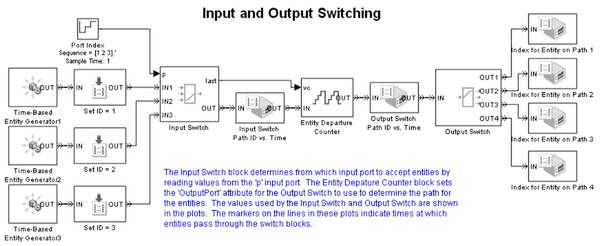
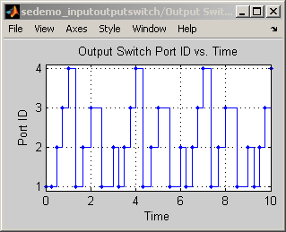
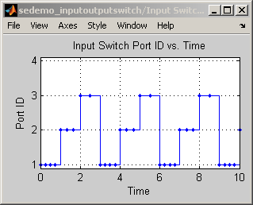

Input and Output Switching
Contents
Overview
This model demonstrates how the routing of entities can be achieved via Input Switch and Output Switch
Working
In this model, the Input Switch block determines from which input port to accept entities by reading values from the p input port. The Entity Departure Counter block sets the OutputPort attribute for the Output Switch to use to determine the path for the entities. The values used by the Input Switch and Output Switch appear in the plots. The markers on the lines in these plots indicate times at which entities pass through the switch blocks.
 